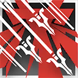

|
 |
暴风重射丨Storm Bolt 攻击动作
消耗 1 技力
 立即
立即 |
消耗增强：此战技每消耗1点技力，本回合你通过重点打击特性造成的伤害就增加1d8。
狙击-重射手：你擅长射击近距离敌人造成精准物理杀伤。
重射手（Heavyshooter）是狙击职业中的一个职业分支。他们专注于近距离打击与高破坏力，能够通过多样的远程武器（如手弩、轻弩、重弩、长弓等）在近距离对目标进行高精度和具备破甲能力的强力射击。
在战斗中，重射手干员通常被部署在前线的关键位置，确保能够在敌人接近时进行高效的近距离射击。他们会选择视野开阔的地点，以便能够迅速锁定并攻击敌人。
3级：重型射手 Heavy Shooting
作为一名重射手，你习得下述特性：
精准重击。当你用远程武器攻击攻击60尺内的目标时，若在攻击检定的D20上掷出19或20即可视为造成重击。
精锐弹药。你使用你精通的武器发动的远程攻击在命中物件时视为造成重击。并且可以正常对那些原本免疫重击的生物造成重击。
3级：重点打击 Heavyshot Crit
你可以精准地对敌人进行打击，你习得下述特性：
重点打击。每回合仅一次，使用远程武器攻击距离你60尺内的目标时，额外造成1d8点穿刺伤害。
6级：重射战技 Heavyshoot Battleskills
你对武器的掌握允许你在重击中获益。你习得下述特性：
破甲重击。当你使用远程武器造成重击时，弹药将嵌入目标的体内。目标的AC具有-2减值，持续1分钟或在其以剥离枪弹替换其的其中一次攻击时提前结束。
此外，你从以下战技中选择一个习得：暴风连射、破甲贯射。你可以在每次升级时重新选择以此习得的战技。
|
 |
暴风重射丨Storm Bolt 攻击动作
消耗 1 技力
立即 |
|
|
破甲重射丨Piercing Bolt 附赠动作
消耗 1 技力
立即 |
10级：交叉火力 Crossfire Conformity
你可以在战斗中协调盟友的火力，使得他们的攻击更加致命。你习得下述特性：
指挥攻击。你可以使用附赠动作指定一个可以听见你声音的盟友，对方可以采取反应发动一次远程武器攻击，或者施展一道施法时间为动作，且进行远程法术攻击的戏法。
弹道校准。当你60尺内的可见盟友在一次远程攻击中失手时，你可以采取反应，使得那此远程攻击获得+1d6加值。这可能使得攻击变为命中。
15级：强效重击 Effective Crit
你对远程武器的掌握进一步增强。当你用远程武器攻击攻击60尺内的目标时，若在攻击检定的D20上掷出18或更高即可视为造成重击。
18级：终结战术 Final Tactics
你的远程武器攻击无视目标所拥有的任何穿刺伤害抗性。
此外，你习得战技：终结战术。
|
|
终结战术丨Final Tactics 攻击命中
消耗 2 技力
立即 |